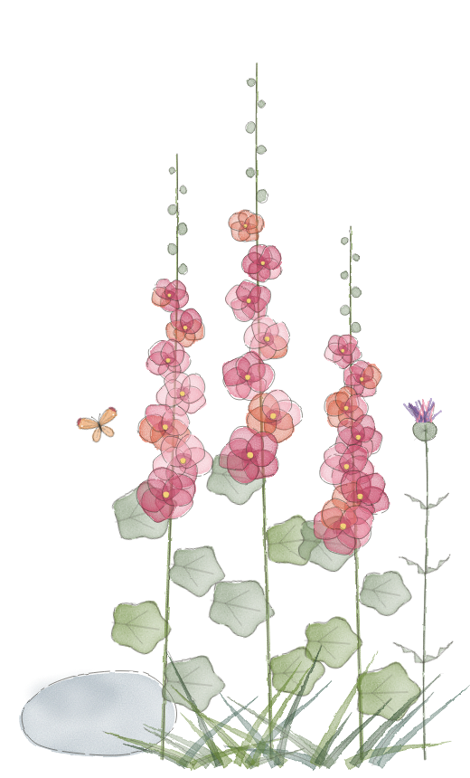
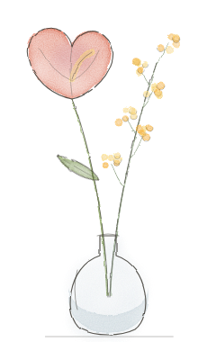
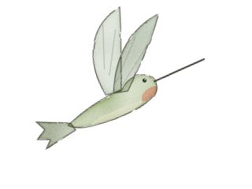

Design system
Wildflower
Hand-painted botanicals, ivory paper, olive ink. For a baby shower website in the Zola / Paperless Post idiom.
Colour
Paper and ink carry the page. Blooms appear only in the artwork, never as text colour: none of the pinks or yellows pass contrast on ivory.
Paper & ink
Blooms — soft
Blooms — wallpaper
Ink options — set data-ink on <html>
Olive
default
Charcoal
data-ink="charcoal"
Teal
data-ink="teal"
Raspberry
data-ink="raspberry"
Type
Three voices. The script is for the name and signatures only, never a sentence or a button. The serif does all the reading. The sans does labels, dates and controls in tracked-out caps.
Script — Pinyon
Display — Cormorant Garamond 56
Section title — italic 42
Heading — 34
Lead — italic 24
Body — 20 / 1.6. Generous, old-style numerals, a warm grey rather than black. Lines are capped at about 34rem so a paragraph never runs wide on desktop.
Small caps label — Jost 13 / 0.24em
Ornaments
Transparent PNGs cut for ivory. Use one motif per job and repeat it: the hero sprig once, the section sprig above every italic section title, the stem as a sign-off.
 hero-sprig · 1200×400 ·
hero-sprig · 1200×400 · .ornament--hero section-ornament · 600×150 ·
section-ornament · 600×150 · .ornament--section single-stem · 160×400 ·
single-stem · 160×400 · .ornament--stemDivider — .divider
Venue illustrations
Ink line with loose watercolour washes, deliberately misregistered. Use them large and sparingly: the building on the Details card, the hollyhocks beside the note, the spots in callouts.
 building · 1200×700
building · 1200×700
hollyhocks · 520×860
bud-vase · 240×380
hummingbird · 320×240 butterfly · 240×200
butterfly · 240×200Buttons
Section heading
The Details
An optional line underneath
Detail cards & timeline
Good to know
Garden-party casual
- 1:00 pmArrive, drinks and nibbles
- 1:45 pmLunch
- 3:30 pmCake
Callout
A book instead of a card
In place of a card, bring a children's book and write a note inside.
FAQ
Can I bring my partner?
Where do I park?
Form
Thank you
We can't wait to celebrate with you.